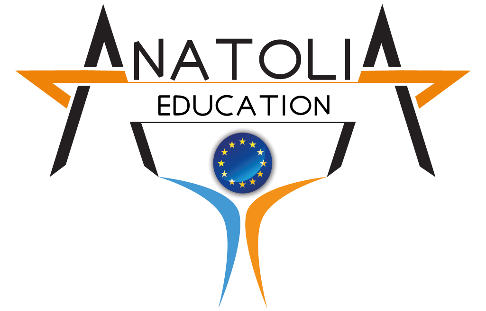

INFORMACJE O PROJEKCIE
Dla wielu uczniów Zespołu Szkół Elektronicznych w Rzeszowie praktyki zawodowe to jedna z najważniejszych form kształcenia. Dlatego też z ogromnym zainteresowaniem przyjęliśmy propozycję wyjazdu na Cypr, gdzie mieliśmy okazję zdobywać doświadczenie w różnych firmach i instytucjach związanych z dziedziną informatyki, elektroniki czy też fotografii. Podczas praktyk uczniowie mieli także okazję doskonalić swoje umiejętności językowe, ponieważ praca w międzynarodowym środowisku wymagała od nich komunikacji w języku angielskim.
uczniowie doskonalili swoje umiejętności w dziedzinach :
- informatyki
- elektroniki
- florystyki
- fotografii
W ramach programu praktyk zawodowych, uczniowie zostali przydzieleni do różnych firm, zależnie od ich zainteresowań i umiejętności. Jedni pracowali w firmach zajmujących się projektowaniem oprogramowania, inni mieli okazję pracować przy projektach z dziedziny elektroniki. Każdy z uczniów miał swój własny plan pracy, który był dopasowany do ich indywidualnych potrzeb i umiejętności.
Podczas praktyk uczniowie mieli okazję poznać realia pracy w branży informatycznej i elektronicznej. Zajmowali się projektowaniem systemów, programowaniem aplikacji, a także instalowaniem i konfigurowaniem sprzętu komputerowego. Uczniowie mieli także okazję pracować z najnowszymi technologiami, takimi jak Internet Rzeczy (IoT) czy sztuczna inteligencja (AI).
Praca w międzynarodowym środowisku wymagała od uczniów znajomości języka angielskiego na poziomie umożliwiającym komunikację z zagranicznymi kolegami i klientami. Dlatego też w ramach praktyk uczniowie mieli okazję uczestniczyć w kursach języka angielskiego, które prowadzili doświadczeni nauczyciele z kraju i zagranicy.
 ORGANIZATORZY
ORGANIZATORZY
Anatolia Eğitim ve Danışmanlık
DUMLUPINAR MAH. OSMAN ATTILA CAD. No:4 /1 – D:6 MERKEZ / AFYONKARAHISAR strona firmowa
EDU-IT AUGUSTYN, PIEPRZYCKI SP.J.
ul. Hetmańska 62/3, 35-078 Rzeszów strona firmowa